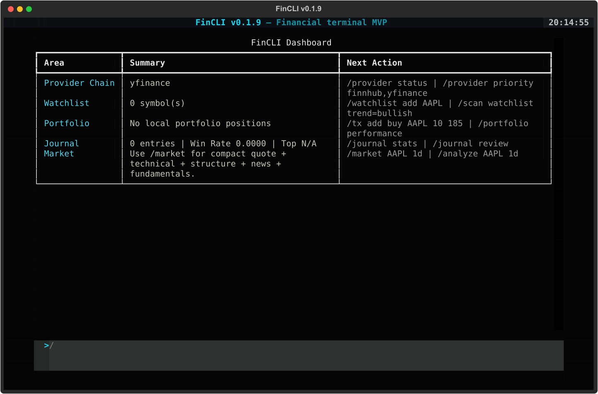
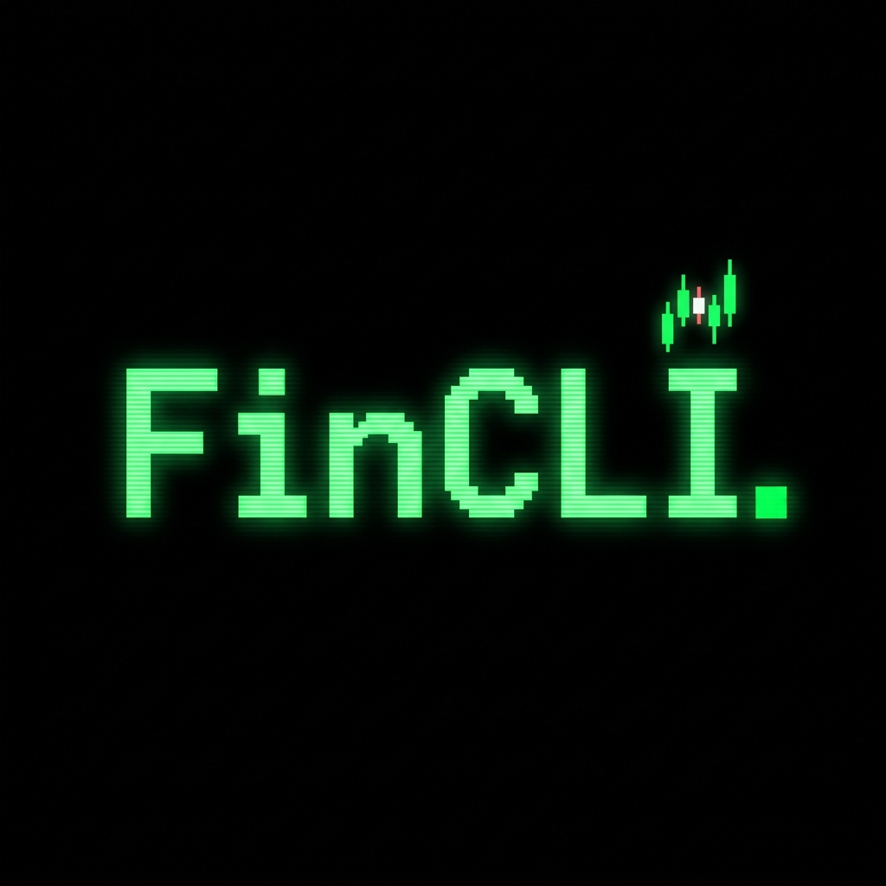
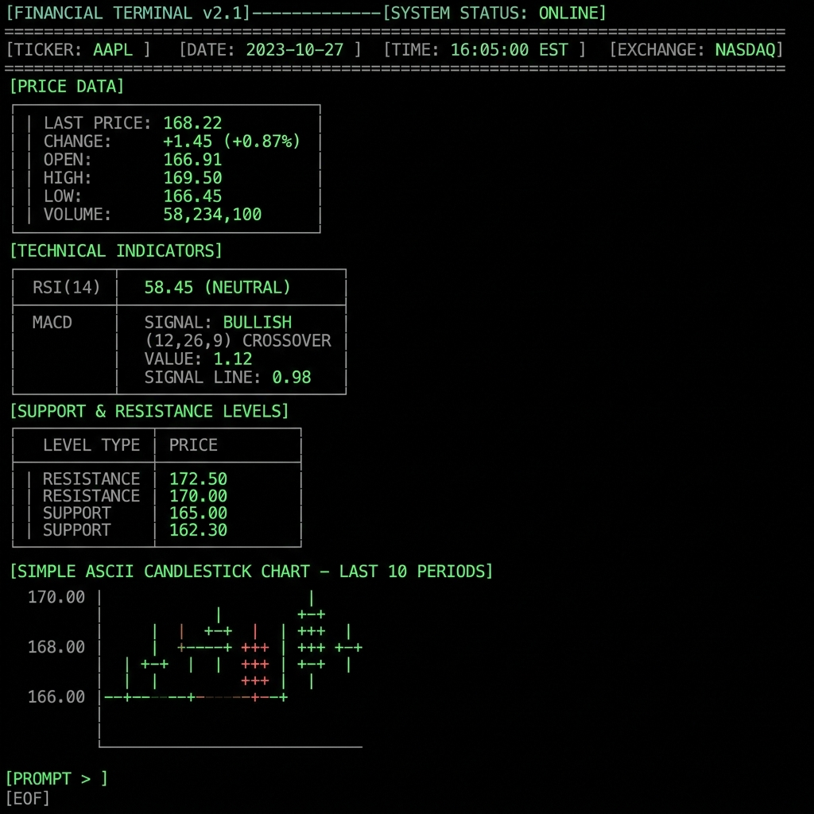
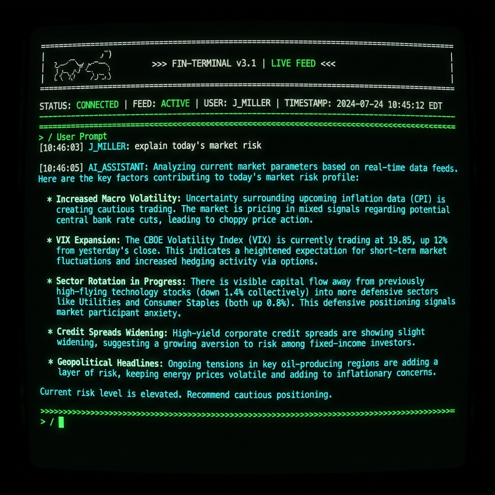
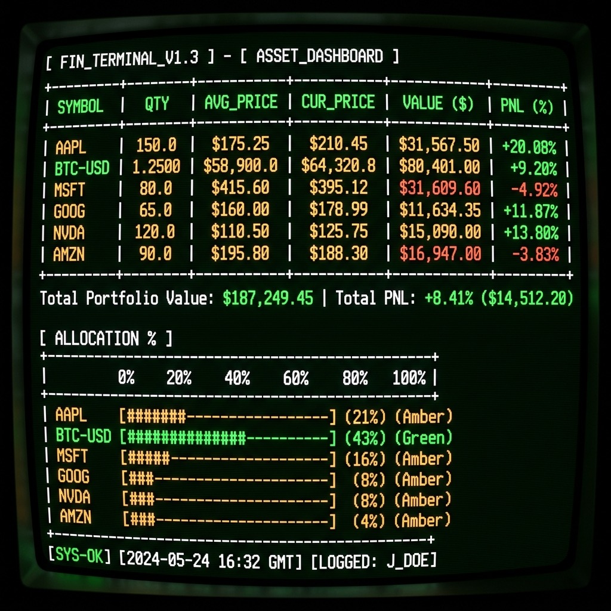
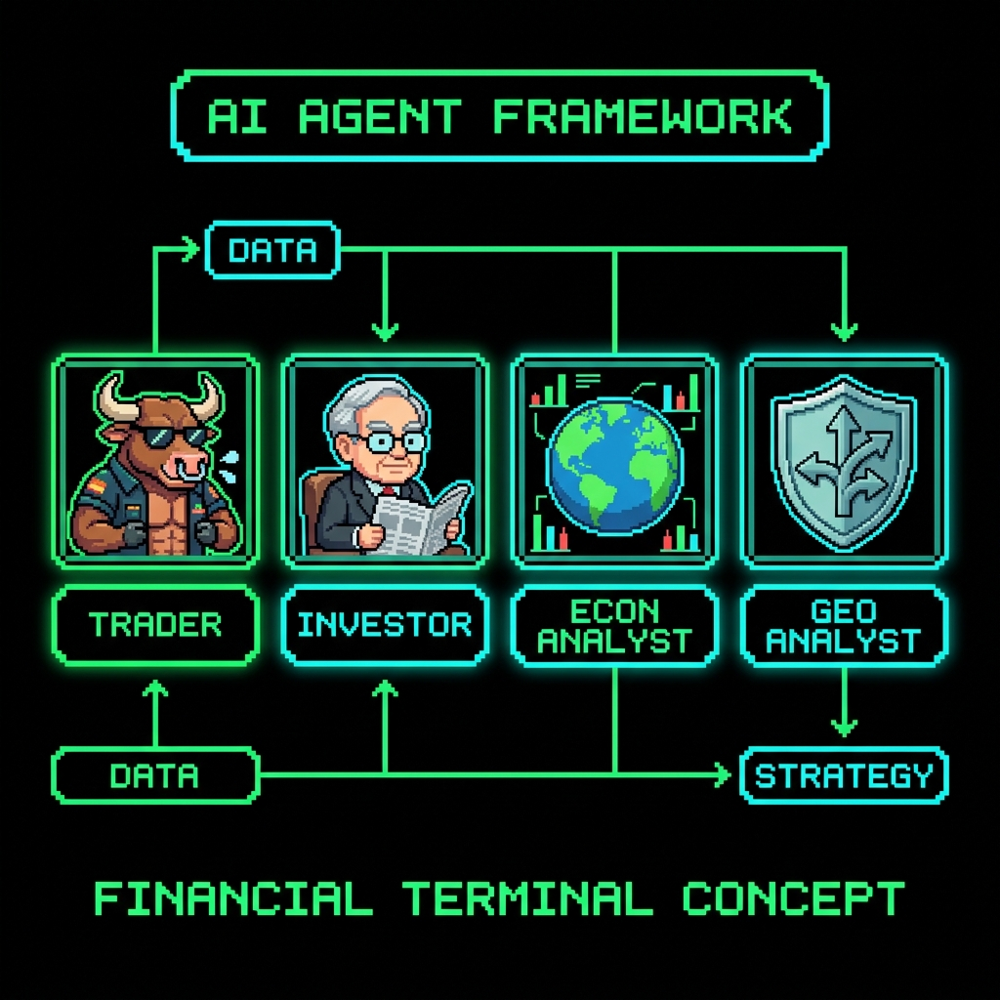
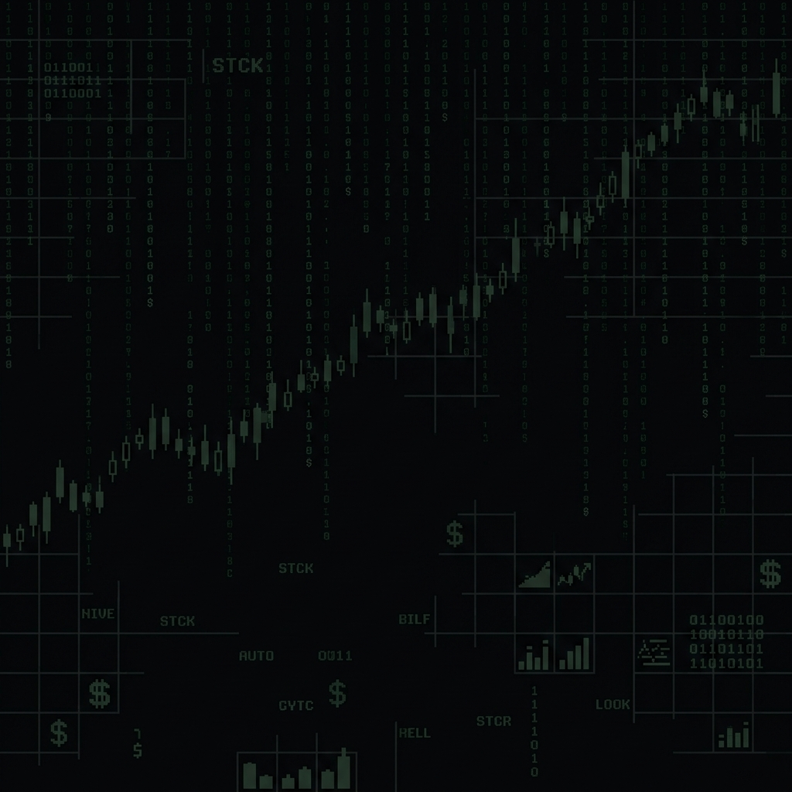

v0.2.1 — Financial Terminal MVP
Modern financial CLI/TUI for market monitoring, technical analysis, AI-assisted research, portfolio tracking, watchlists, trading journals, and configurable market/news provider workflows.

FinCLI Dashboard — Textual TUI
// What You Get
Everything you need for professional market research, directly from your terminal.
Professional entry point for any symbol. Data quality score, quote, RSI, MACD, ATR, trend bias, support/resistance, structure, fundamentals, and latest news in one compact view.
SMA, EMA, RSI, MACD, Bollinger Bands, ATR, support/resistance, volume analysis, trend bias, and technical signal scoring with Bull/Bear/Caution debate engine.
11+ AI providers including OpenAI, Gemini, Anthropic, Groq, DeepSeek, and local Ollama. Context-aware prompts with market data, news, web research, and agent frameworks.
HH/HL, LH/LL detection, break of structure (BOS), change of character (CHOCH), liquidity areas, and risk zones for smart money concept analysis.
Full transaction ledger with buy/sell tracking, cost basis, market value, unrealized & realized PnL, allocation view, and CSV/JSON exports.
Build watchlists and scan with safe expressions: rsi<30, trend=bullish, volume>avg. Batch fetch, indicator calculation, and export to CSV/JSON.
Log entries with symbol, bias, and notes. Stats track win rate, dominant instruments, emotions, and tags. AI-powered review detects patterns and improvement areas.
Configurable fallback chain across Twelve Data, Finnhub, Alpha Vantage, Custom API, and yfinance. Automatic failover with realtime/delayed labeling.
Prompt-framework agents: Buffett, Graham, Lynch, Soros, Wyckoff, Dalio, Fed Watcher, FX Macro, Geopolitical Risk, and more. Shape AI analysis without changing the LLM.
Finnhub-powered calendar with impact filters, country selectors, date ranges, and CSV/JSON export. Local fallback when API is unavailable.
Fetch multiple timeframes at once. Trend/structure/RSI/MACD alignment across 1d, 1h, 15m or custom combos. Labels like "aligned bullish" or "mixed".
Set above/below price alerts stored in SQLite. Manual check or interval-based runner. Triggered alerts auto-deactivate. All local, no external dependencies.
Educational SMA cross and RSI reversion strategies. Candle count, trades, total return, win rate, max drawdown, and risk notes. No fees or slippage modeled.
Multi-source news: Yahoo, Finnhub, Alpha Vantage, Marketaux, NewsAPI, GNews, Google/Bing RSS. Terminal news-desk view with feed table and article detail.
Lightweight HTTP web research. /web for AI-synthesized results, /web sources for raw links. No browser automation needed.
Catalog of data connectors with honest statuses: active, planned, enterprise, optional. Categories include core data, news/sentiment, crypto/DeFi, alternative, and macro.
// Visual Preview
See FinCLI in action — from market analysis to AI chat and portfolio tracking.






// Try It Out
Type commands below to explore FinCLI features. Try /help, /dashboard, or /market AAPL.
// Get Started
Multiple ways to install FinCLI. Python 3.11+ is required for all methods.
Isolated Python environment. The fincli command is globally available without polluting your system Python.
If published to PyPI:
Common "install once, run anywhere" pattern. The npm wrapper creates a local Python venv during install.
The npm wrapper still requires Python 3.11+ during installation. The postinstall script creates a .npm-python virtual environment inside the installed package.
Clone the repo and install in editable mode for development.
Alternative using requirements.txt:
After installing, launch fincli and save API keys directly from the terminal. No manual file editing needed.
~/.fincli/secrets.env.env or secrets.env to version control// Command Reference
Click any category to expand the full command list. FinCLI uses slash commands for all actions.
/helpShow all available commands/dashboardCompact overview: provider, watchlist, portfolio, journal/configDisplay active configuration (keys are masked)/doctorEnvironment diagnostics: runtime, storage, providers, API keys/setupOnboarding guide for AI and market provider keys/clearClear the terminal screen/exitExit FinCLI/market AAPL 1dFull market overview: quote, technicals, structure, fundamentals, news/technical BTC-USD 1dTechnical analysis with signal scoring and debate engine/mtf AAPL 1d,1h,15mMulti-timeframe alignment analysis/structure BTC-USD 1dMarket structure: HH/HL, BOS, CHOCH, liquidity zones/news AAPLNews desk view with multi-source feed/funda MSFTFundamental snapshot/symbol XAUUSDSymbol search and provider normalization/calendar todayEconomic calendar with impact filters/backtest AAPL sma_cross 1dLightweight educational backtesting/portfolioView current portfolio positions/tx add buy AAPL 10 185Add a buy transaction/tx add sell AAPL 5 195Add a sell transaction/portfolio performanceCost basis, market value, PnL breakdown/journal add BTC-USD bullish "..."Log a trading journal entry/journal statsWin rate, dominant instruments, emotions, tags/journal reviewAI-powered journal process review/export portfolio json file.jsonExport portfolio/journal to CSV or JSON/watchlistView current watchlist/watchlist add AAPLAdd symbol to watchlist/watchlist remove AAPLRemove symbol from watchlist/scan watchlist rsi<30Scan for oversold symbols/scan watchlist trend=bullishScan for bullish trend/scan watchlist rsi<30 and trend=bullishCombined expression scan/scan export csv scan.csv rsi<30Export scan results/ai explain today's riskAI chat with market context/analyze AAPL 1dFull AI-powered analysis with indicators, structure, news/web why is rupiah weakeningWeb research summarized by AI/web sources gold price updateRaw web sources without AI/ai_modelInteractive AI provider/model selector/ai_model key groq <key>Save AI provider API key/agent listList all 37 analysis agents/agent use buffettActivate an agent framework/news_modelInteractive market/news provider selector/provider statusActive provider and fallback chain/provider test AAPLTest active provider with a symbol/provider entitlementCheck realtime/delayed access/provider priority twelvedata,finnhub,yfinanceSet fallback chain priority/connector listBrowse 100+ data connector catalog/connector show polygonShow connector details and status/cache statsView cache hit/miss statistics/alert add AAPL above 200Set a price alert/alert checkCheck all active alerts/alert run interval 60Non-blocking alert runner/historyView session history/history save "Morning research"Save current session with label/report market AAPL md report.mdExport market report to Markdown/yahoo BBRI history 6mo 1dHistorical OHLCV data/yahoo BBRI statisticsKey statistics/yahoo BBRI profileCompany profile/yahoo BBRI financialsIncome statement/yahoo BBRI balanceBalance sheet/yahoo BBRI cashflowCash flow statement/yahoo BBRI analysisAnalyst estimates/yahoo BBRI holdersInstitutional/insider holders// Data & AI Sources
FinCLI supports multiple market data and AI providers. Configure your preferred chain for best coverage.
| Provider | Key Env | Coverage | Status |
|---|---|---|---|
| yfinance | No key needed | Stocks, ETFs, Forex, Crypto, Indices, Commodities | ● Active (fallback) |
| Twelve Data | TWELVE_DATA_API_KEY |
Multi-asset: forex, metals, global stocks, crypto, indices | ● Active |
| Finnhub | FINNHUB_API_KEY |
Stocks, forex/crypto candles, company news, calendar | ● Active |
| Alpha Vantage | ALPHA_VANTAGE_API_KEY |
Stocks, FX quote/history, news sentiment, company overview | ● Active |
| Custom API | MARKET_DATA_API_KEY |
Any instrument your API exposes via FinCLI schema | ● Active |
/provider priority twelvedata,finnhub,yfinance — Twelve Data first for forex/indices/metals, Finnhub for stocks/news, yfinance as free delayed fallback.
| Provider | Key Env | Type |
|---|---|---|
| OpenRouter | OPENROUTER_API_KEY | OpenAI-compatible |
| OpenAI | OPENAI_API_KEY | OpenAI-compatible |
| Gemini | GEMINI_API_KEY | Gemini API |
| Anthropic | ANTHROPIC_API_KEY | Anthropic API |
| Groq | GROQ_API_KEY | OpenAI-compatible |
| Together | TOGETHER_API_KEY | OpenAI-compatible |
| DeepSeek | DEEPSEEK_API_KEY | OpenAI-compatible |
| HuggingFace | HUGGINGFACE_API_KEY | OpenAI-compatible |
| MiniMax | MINIMAX_API_KEY | OpenAI-compatible |
| NVIDIA NIM | NVIDIA_NIM_API_KEY | OpenAI-compatible |
| Ollama | OLLAMA_BASE_URL | Local endpoint |
Coverage depends on provider, symbol format, subscription plan, and exchange entitlement. FinCLI accepts common aliases and normalizes them for each provider.
// AI Framework
Prompt-framework agents shape AI analysis style without changing the LLM provider. Use /agent use <name> to activate.
Accumulation/distribution phases, spring, markup/markdown cycles
Smart money concept: order blocks, FVG, liquidity sweeps
ICT concepts: OTE, breaker blocks, killzones
Multi-day swing setups with trend confirmation
Intraday scalping with quick entries and exits
Top-down macro + concentrated momentum positions
Reflexivity theory and macro imbalance trading
Value investing: moats, margin of safety, long-term compounding
Intelligent investor: net-net, earnings stability, conservative valuation
GARP: growth at reasonable price, PEG ratio, invest in what you know
Mental models, quality businesses, circle of competence
Deep value, distressed assets, wide margin of safety
Market cycles, second-level thinking, risk assessment
All-weather portfolio, macro cycles, risk parity
FOMC, rate decisions, dot plot, Fed rhetoric analysis
Currency pairs, interest rate differentials, carry trades
Yield curves, credit spreads, duration, convexity
CPI, PPI, PCE, breakeven rates, real yields
Supply/demand, seasonal patterns, contango/backwardation
Conflict analysis, sanctions impact, trade war effects
EM-specific risk: currency, politics, capital flows
OPEC, oil embargoes, energy transition policy
// Built With
FinCLI needs an interactive terminal dashboard, not a static CLI. Textual provides a reactive widget system for the TUI while Rich handles formatted tables, panels, Markdown rendering, and structured output.
// Data & Config
All data stays on your machine. No cloud sync required.
The SQLite database stores watchlist, portfolio, transactions, journal, session history, and market cache. The two-layer cache (runtime memory + persistent SQLite) reduces API rate-limit pressure and speeds up scanner workflows.
// What's Next
Alpha Vantage, Twelve Data, Finnhub, Custom API with configurable fallback chain.
✓ ShippedProvider-specific symbol mapping via /symbol and /symbol normalize.
Finnhub-powered with impact filters, country selectors, and CSV/JSON export.
✓ ShippedExport matched scan results from watchlist to CSV or JSON.
✓ ShippedSMA cross and RSI reversion strategies with educational metrics.
✓ ShippedAbove/below alerts stored in SQLite with manual and interval-based checking.
✓ ShippedExportable reports to Markdown/JSON with optional web, MTF, and backtest sections.
✓ ShippedFetch multiple timeframes and summarize alignment (bullish, bearish, mixed).
✓ ShippedUser-extensible plugins for custom indicators, providers, and workflows.
◇ PlannedVisual or config-based strategy composition with backtest integration.
◇ PlannedSharpe ratio, drawdown charts, sector breakdown, correlation matrix.
◇ PlannedTelegram, Discord, email alerts when price targets are hit.
◇ PlannedSync portfolio, watchlist, and journal across devices.
◇ PlannedWebSocket streaming where supported by provider plans.
◇ Planned// Help
yfinance as a free delayed data fallback. API keys are optional — you can add them for better coverage, realtime data, or AI features. Use /setup to see the onboarding guide.
pip install -e ., pipx install ., or npm install -g . from the project root. Make sure Python 3.11+ is on your PATH. For pipx, run pipx ensurepath after installation.
/ai_model key <provider> <key> or /news_model key <provider> <key> to save keys directly. Then verify with /config or /provider key status. Keys are stored at ~/.fincli/secrets.env.
/symbol normalize <symbol> to see how FinCLI maps it. Test with /provider test <symbol>. For non-US stocks, use Yahoo exchange suffixes like BBRI.JK, HSBA.L, etc.
/provider entitlement to check.
~/.fincli/config.json to return to defaults. API keys in secrets.env are separate and will not be affected. Run /doctor after to verify everything is healthy.
pytest from the project root. Latest verification: 113 tests passed. For the npm wrapper, use npm run check and npm pack --dry-run.